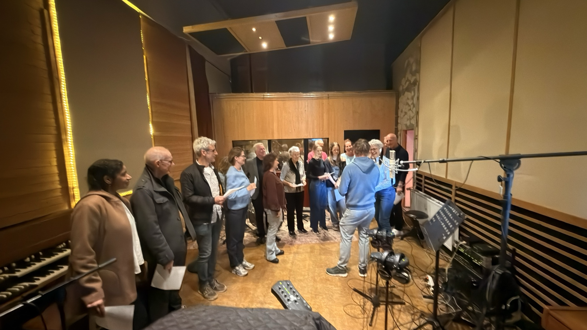

Studio Informatie

Moby Dick Music Studio is een opnamestudio aan de Schieweg in Delft. De ruimte is gebouwd rond één idee: source is king. Geweldige instrumenten, een geweldige ruimte, echte preamps en hardware compressors in het signaalpad.
Van een Yamaha C5 vleugel en Hammond A-100 tot een rek vol klassieke synths, vintage gitaren en een goed afgestelde drumkamer. De gear hier wordt écht gebruikt.
Of je nu een band bent die een live plaat maakt, een producer die overdubs laagt, of een soloartiest die nieuw materiaal demo't, Moby Dick heeft de ruimte en de tools om het te realiseren.
We werken met artiesten in alle genres. De setup is hybride: echte hardware waar het telt, in de ruimte en aan de console, gecombineerd met een volledige digitale workflow zodat je vertrekt met bestanden die klaar zijn voor gebruik.
De studio heeft een hoofdliveruimte en verschillende aanvullende opnameruimtes, wat je flexibiliteit biedt voor verschillende configuraties: volledige band, isolatie, of alles daartussenin. Alle ruimtes zijn verbonden met 32 ingangen aan de console.
Tarieven zijn flexibel en worden per project besproken. Neem contact op via het boekingsformulier of per telefoon en we regelen wat past.
We zitten op Schieweg 15D, 2627AN Delft. Goed bereikbaar met de auto, met parkeerplaats op het terrein. Vlakbij de A13.